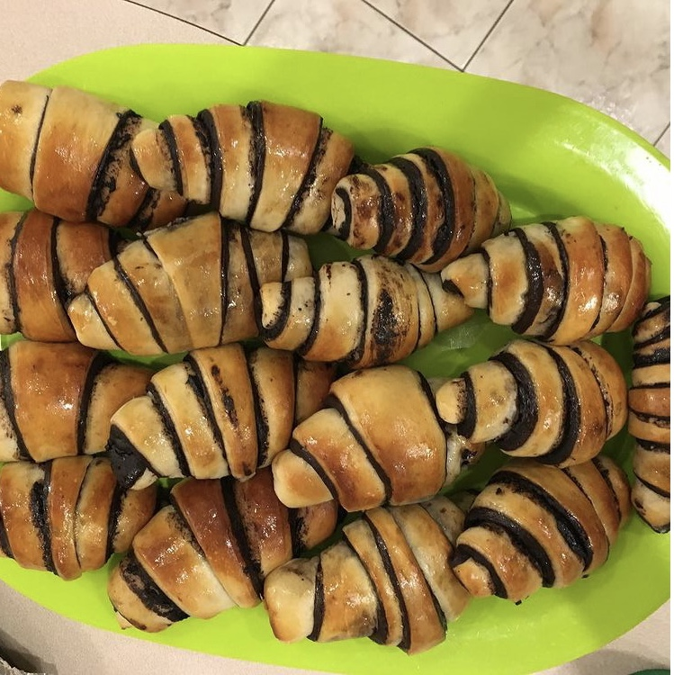

Chocolate Rugelach

Description
This is an Israeli dessert. Whenever my mom bakes them the aroma fills the air and tempts me to eat them as soon as they're ready. After I have one, I am already craving for another. This recipe makes 40 pieces.
Ingredients
Dough:
- ½ kilogram flour
- 1 tablespoon yeast
- 1 teaspoon salt
- ½ cup of sugar
- 2 tablespoons of vanilla sugar
- 1 egg
- ¼ glass of canola oil
Chocolate filling:
- 3 tablespoons cocoa powder
- 1 cup of sugar
- ⅓ cup of oil
- 2 tablespoons of Nescafe
Syrup
- Cup of Sugar
- Cup of water
Steps
Preparation
- Preheat the oven to 200 degrees℃.
- Mix up all the chocolate filling ingredients until they become creamy.
- Put the cup of water and the cup of sugar on low heat until the sugar melts.
Making the dough
- Mix all the ingredients for 10 minutes.
- Let it rise until the dough doubles.
Making the shape of the rugelachs
- Divide the dough into 3 pieces.
- Roll out the dough into a circle (like a round pizza).
- Take a third of the chocolate filling and spread on top of each circle.
- Cut the dough into triangles (like a slice of pizza).
- Start rolling each triangle from the wide end to the narrow end.
- Leave it to rise on a baking tray for 30-40 minutes.
- Then bake for 15 minutes. When it out brush the syrup on top of the rugelachs.
Back to Homepage